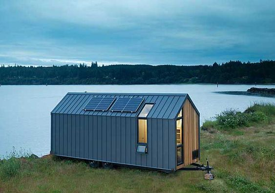
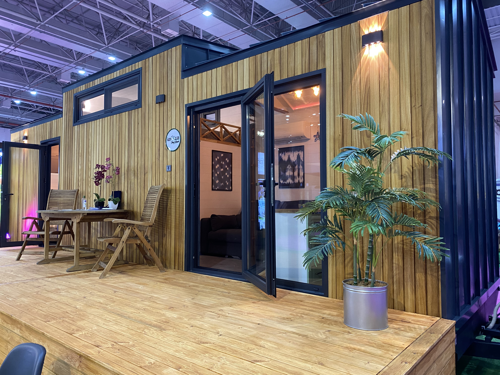
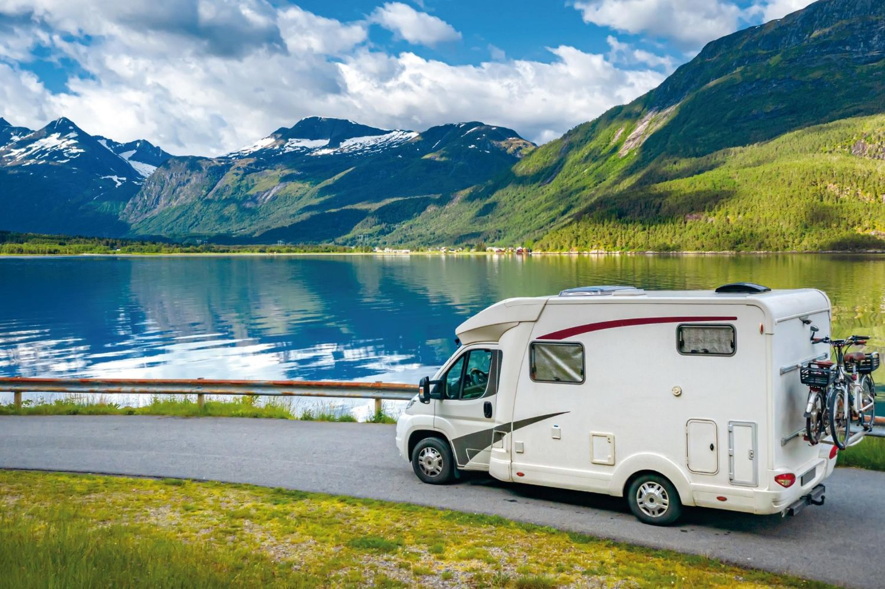

Çekme Karavan
Çekme karavan motorlu taşıtlar tarafından çekilerek götürülebilen ve Karavan içinde yaşamak için gerekli ekipmanların barındırıldığı karavan tipidir. Bu tarz karavanlar sadece motorlu araçlar ile çekilebilmekte olup karavan donanımında herhangi bir itici kuvvet olarak motor yoktur. Çekme karavanlarda özellikle taşıtın ağırlık durumuna göre Vergi ve Ruhsat işlenmektedir. 750 KG altı olan karavanlardan O1 Belgesi ve Çekme karavan satış faturası ile noterden satış yapılabilmektedir. 750 Kg altı karavanlar Vergi ve Muayeneden muaftır.

Tiny House
Tiny House (küçük ev) genellikle 10 metrekare ile 30 metrekare arasında, tekerlekli veya sabit olarak tasarlanan evlere verilen isim. Tiny House; bir evden daha fazla anlam taşıyor ve yaşam biçimi olarak kabul ediliyor. Küçük ancak daha kullanışlı bir yaşam alanı yaratmasıyla avantaj sağlayan küçük evler, tüm dünyada ilgi görüyor. Üstelik farklı boyut ve şekilde inşa edilebiliyor.Tiny House kültürü çok daha fazlasını ifade etmektedir. Tekerlekli veya sabitlenme özellikleriyle özgür ve konforlu bir yaşamı mümkün kılar. Bir çok Tiny House 2,55m x 7m ölçülerinde olmakla birlikte yaşam alanı, loft daire, uyku alanı, mutfak ve banyo içerir.

Motokaravan
Çekme karavandan farklı olarak motokaravan seçenekleri kendi başına hareket edebilen karavanlardır. Bir araca ihtiyaç duyulmadığından karavanla sürekli seyahat etmek isteyenler için özeldir.Herhangi bir motorlu taşıtın (araba,midibüs,minibüs,otobüs,kamyon ve hatta tır) modifiye edilerek içerisine yaşam modülleri eklenerek orataya çıkar.Çekme karavanların aksine herhangi bir çekiş sağlayan taşıta gerek kalmaz.Normal taşıtların park edilebileceği her alana motokaravanınızı çekebilirsiniz. Bu modeller için herhangi bir ekstra park engeli olmadığı söylenebilir. Çekme karavanınızı park etmek için karavan park alanlarını kullabilirsiniz.